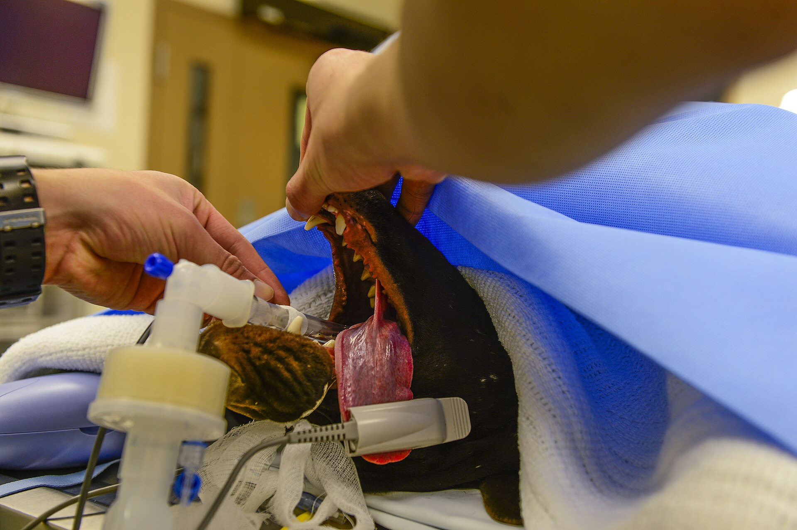
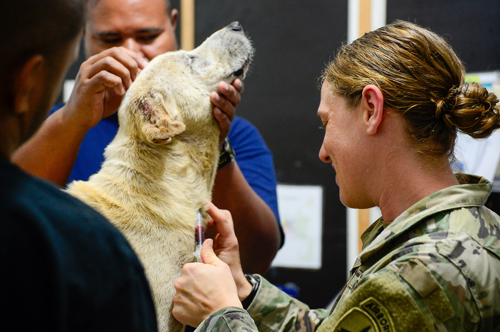

Livmoderinflammation
En obehandlad livmoderinflammation kan bli livshotande inom ett dygn. Vi opererar akut och tar bort livmodern. Ingreppet kostar 11 900 kr inklusive narkos och eftervård.
Så gör vi ingreppet
Kastreringen görs i full narkos. En katthane är klar på en halvtimme, medan en tik på 25 kg kan ta över en timme eftersom buken öppnas.
Före narkosen väger vi djuret och räknar fram dosen efter vikten. En hund på 30 kg får betydligt mer narkosmedel än en katt på 4 kg. Honor får dessutom mer smärtlindring, eftersom såret är större än hos hanen.
Under ingreppet mäter vi andning, puls och syresättning var femte minut. Efteråt ligger djuret i en uppvärmd bur med filt, och en djursjukskötare tittar till det var tionde minut tills det sitter upprätt.

Priser
Vikten styr hur mycket narkosmedel som går åt, och det syns i priset. Alla priser nedan är fasta och gäller djur upp till 40 kg.
| Djur | Ingrepp | Pris |
|---|---|---|
| Hund | Hane | 3 900 kr |
| Hund | Hona | 6 900 kr |
| Katt | Hane | 1 900 kr |
| Katt | Hona | 3 400 kr |
Djur över 40 kg får ett tillägg som räknas ut vid bokningen. Räkna på din hunds eller katts vikt i priskalkylatorn, eller ring 08-410 522 30 för ett fast besked samma dag.
Dagsplanering
En kastrering tar en hel dag på kliniken. Du lämnar på morgonen och hämtar samma eftermiddag.
Djuret ska ha fastat från midnatt, så ingen frukost hemma. Kom i koppel eller transportbur och räkna med tio minuter för inskrivning.
Ingreppet tar 30 till 90 minuter. Veterinären känner igenom djuret före narkosen och ringer dig om något avviker från det vi kom överens om.
Djuret ligger varmt med filt och smärtlindring medan det vaknar. Oftast sitter det uppe före kl 13.
Du får med dig smärtlindring för 3 till 5 dagar och en tid för återbesök inom tio dagar, då vi kontrollerar att såret läker som det ska.
Eftervård
De första timmarna hemma är djuret trött och kan vara lite vingligt. Låt det sova i en tyst vrå med en filt under, och håll andra djur borta från såret.
Såret ska vara torrt och rent. Titta till det morgon och kväll, och ring om kanterna rodnar eller vätskar. Stygnen sitter kvar i 10 till 14 dagar och tas bort på kliniken, eller har lösts upp av sig själva.
Aktiviteten trappas upp gradvis. En vecka med korta koppelpromenader räcker, sedan kan hunden röra sig friare om såret är torrt.
Såret blöder igenom bandaget, djuret andas tungt eller kräks upprepade gånger. Ring 08-410 522 30 i stället för att avvakta till nästa morgon.
Telefonen är bemannad dygnet runt, även helger. Läs om akut och jour.

Skäl till ingreppet
Ibland kastrerar vi för att stoppa en sjukdom, ibland för att lösa ett beteende. Det här är de vanligaste skälen vi ser på Klinikvägen 12.
En obehandlad livmoderinflammation kan bli livshotande inom ett dygn. Vi opererar akut och tar bort livmodern. Ingreppet kostar 11 900 kr inklusive narkos och eftervård.
Ungefär hälften av alla tikar över åtta år får en juvertumör. Kastreras honan innan tumören hunnit växa, minskar risken för nya knölar i frisk juvervävnad.
Förstorad prostata ger trögt kissande och blod i urinen hos äldre hanhundar. Efter kastrering klingar besvären av inom några veckor.
Hormonerna gör att många hanhundar gnäller och drar i kopplet i flera veckor under löptiden. Kastrerade hundar bryr sig betydligt mindre om löptikarna.
Okastrerade hanhundar markerar revir inomhus, ofta på flera ställen i hemmet. Efter ingreppet upphör beteendet hos ungefär tre av fyra hundar.
Ska hunden ändå sövas för tandvård eller röntgen? Då kan vi kastrera i samma narkos, så djuret slipper sövas två gånger.
Vanliga frågor
Frågorna nedan kommer från djurägare som bokat kastrering hos oss det senaste året.
Aktivitetsnivån förändras lite. Matbehovet sjunker med ungefär 10 procent, och det är där kilona kommer smygande. Minska portionen med en femtedel och rör på hunden som förut, så håller vikten sig.
En vecka med koppelpromenader räcker för de flesta. Efter tio dagar får hunden springa igen om såret är torrt. Katter håller sig inne i tio dagar, sedan är det fritt fram igen.
Ja, i tio dagar. Katten slickar på stygnen på natten när du sover, och ett uppslurpat sår kan behöva sys om. En mjuk body fungerar lika bra, men den måste sitta så att katten inte kommer åt såret med tungan.
Pälsen kan bli tätare och mjukare, framför allt hos honor. Det beror på att fällningen styrs av könshormoner, och färre hormoner ger en tätare underull. Hos katter syns skillnaden tydligast runt halsen och på buken.
Ring kliniken eller skicka en bokningsförfrågan. Vi ger dig en tid inom två veckor och skickar fasta-instruktioner samma dag. Priset du får vid bokningen är det pris du betalar.